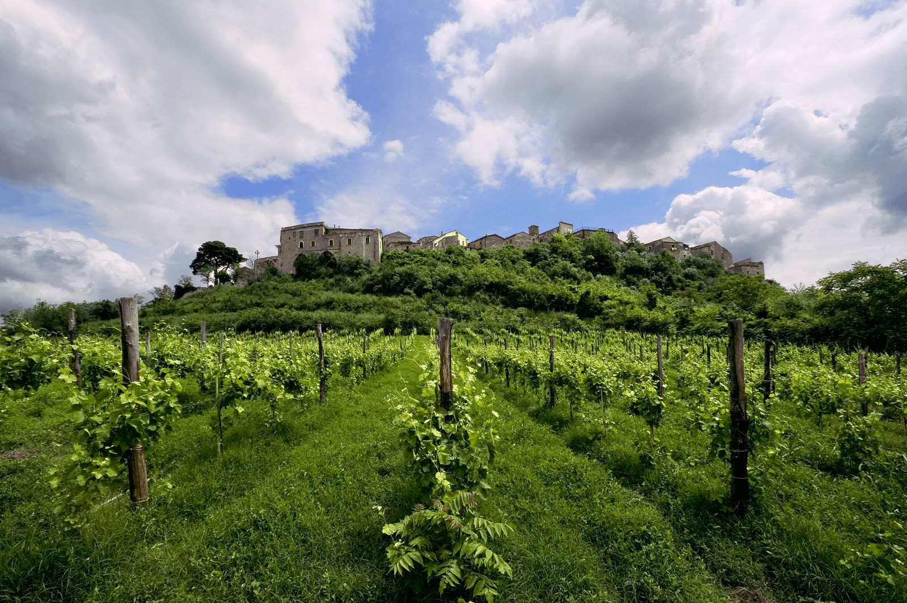

IMPEGNO RESPONSABILE PER LA NOSTRA TERRA
Produrre vini di eccellente qualità nel rispetto del territorio di appartenenza.

LA NOSTRA STORIA
Feudi di San Gregorio nasce nel 1986 in Irpinia, nel cuore della Campania, una terra con una grande tradizione viticola e suoli ricchi di minerali. La sua storia è costruita sulla valorizzazione di vitigni autoctoni come Greco, Fiano, Falanghina e Aglianico, con uno spirito aperto alla creatività, all'arte e al design. Nel tempo l'azienda ha abbracciato un impegno sempre più concreto verso la sostenibilità, che si traduce in azioni pratiche: energie rinnovabili, recupero delle acque piovane, packaging più sostenibile e un protocollo viticolo per proteggere la biodiversità. La nostra visione è che l'arte e la cultura possano innescare un cambiamento positivo a livello territoriale e sociale.
I VINI FEUDISTUDI
FeudiStudi è la linea di alta espressione di Feudi di San Gregorio, nata dalla volontà di raccontare il meglio dei propri vigneti irpini. Il winemaker Pierpaolo Sirch seleziona ogni anno i vigneti più rappresentativi tra gli oltre 800 disponibili, in base alle caratteristiche dell'annata, vinificandoli senza compromessi. I vini sono pezzi unici a tiratura limitata (circa 2.000 bottiglie), non distribuiti nei canali tradizionali e presentati in una bottiglia esclusiva ispirata alle bordolesi del XVII secolo. La linea nasce nel 2011 con un cru di Taurasi, a cui si affiancano in seguito etichette iconiche come il Fiano, il Greco e l'Aglianico. Particolarità assoluta è il Sirica, antico vitigno scomparso e riscoperto da Feudi di San Gregorio, oggi vinificato in purezza.
L'IRPINIA ATTRAVERSO FEUDISTUDI
L'Irpinia è il nome storico della provincia di Avellino ed è un territorio vitivinicolo d'eccellenza nel cuore della Campania, noto per tre grandi vini: il rosso Taurasi e i bianchi Fiano di Avellino e Greco di Tufo. Nonostante le latitudini mediterranee, il clima fresco e piovoso e la viticoltura montana la rendono atipica per il Sud Italia, tanto che i suoi vini vengono spesso paragonati a grandi etichette nordiche come Langa, Rodano e Bordeaux per i rossi, e Chablis, Loira, Rheingau e Wachau per i bianchi. Un territorio ancora in piena scoperta, ricco di cru e sfumature collinari, destinato a diventare una delle grandi case del vino mondiale.